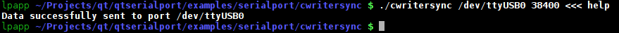

Command Line Writer Sync Example
The Command Line Writer Sync example shows how to use the QSerialPort class for sending data synchronously over the selected serial port with the desired settings.

This command line writer sync example sends data synchronously over the selected serial port in a console, provided by the QSerialPort class.
For sending data synchronously over the selected serial port, use the write() and waitForBytesWritten() methods.
Files: